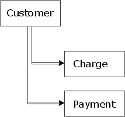
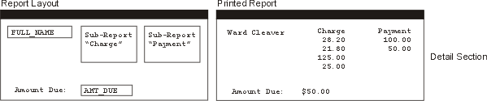

Sub-Reports
A sub-report is an entire report that is placed in the Detail area of another report. Its main purpose is to display data from tables linked in a set using one-to-many links at the same level. A common example of this is a set used to track Charges and Payments on an account. For example, you want to create a report for the following set:

Account Set Diagram
The parent of the set, Customer, is linked to two tables Charge and Payment. In both cases a one-to-many link is used. If you wanted to create a report that lists the charges and payments for each customer, you could put fields from each table in the detail edit region. When the report prints, the Charge list first and then the Payment. If you want the data from the tables to appear side-by-side, instead of one-after-the-other, you can use a sub-report. An example of this type of layout is shown below:

When the report is run, the sub-report data prints side-by-side. To create a sub-report.
While in the Report Editor, select either by using the Sub-Report tool on the Report Editor toolbar or Object > New > Sub-report.
When the Create Sub-report dialog box appears, assign a Name (which appears only in Design Mode) for the report.
Optionally, make a selection from the Filter on table drop-down list. This selection specifies the table that supplies the sub-report's data. For example, if you are creating a sub-report to list records from the Credits table, choose Credits from the drop-down list box.
Optionally, enter an expression in the Specify Filter field. This expression, which must evaluate to a logical value, selects the records that the sub-report will display.
Place the sub-report on the report and stretch it to its appropriate width. Sub-reports automatically grow vertically when they are printed, so you do not have to worry about making them too short (vertically).
Double click the new sub-report. This opens a separate instance of the Report Editor appears in which you can design the sub-report. When you are done, close the editor window. You can return to edit a sub-report by double-clicking on the sub-report.
You can filter the records that appear in a sub-report by using the Sub-report's Detail Properties dialog box. To get to this dialog box while editing the sub-report:
Select the sub-report.
Select Report > Properties > Detail Properties.
Display the Records tab.
See Ordering and Selecting Records for more information.
When a sub-report is created, Alpha Anywhere uses the name of the table you selected in the Create Subreport dialog box to create the default filter expression: SCANNING("TABLE NAME"), where TABLE NAME is the name of the table you selected. This filter expression evaluates to TRUE when records are being retrieved from the chosen child table. It evaluates to FALSE when records are being retrieved from a different child table. If you want to create your own filter expression, use the logical operator .AND. to connect your filter expression to the one Alpha Five creates.
For example, your sub-report lists Amounts from the Payments table. By default, Alpha Anywhere creates the filter expression SCANNING("PAYMENTS"). If you want to see only amounts over five dollars, you can change the filter expression to read: SCANNING("PAYMENTS") .AND. AMOUNT > 5.
The filter expression selects only records in which data is retrieved from the Payments table AND only records in which the value of the field Amount is more than five.
Setting the Subgroup Parameter for a Sub-Report
If you place a sub-report inside a report (the "main" report), then the sub-report will have a detail section, and the main report will also have a detail section. When you create summary calculations, you may have to qualify which detail section you are referring to.
For example, assume that the sub-report is called "Subreport 1". To refer to the detail section in this sub-report, you would need to specify "Subreport 1:detail". Suppose that this sub-report is grouped on Invoice_number and you wanted to total a field called Amount_due in the Group Footer of the sub-report. To do so, you would specify this expression:
|
Total(invoice_items->amount_due, grp->invoice_number, grp->Subreport 1:detail) |
If you just specify grp->detail, Alpha Anywhere assumes you are referring to records in the main report's detail section. Note that the "invoice_number" group does not need to be prefixed with "Subreport 1". This is because when you insert a group in a report or a sub-report, you can specify the name of the group, and are therefore able to specify unique group names for all of the groups in a report and its sub-reports.
See Also
Print Topics, Report Topics, Group Properties